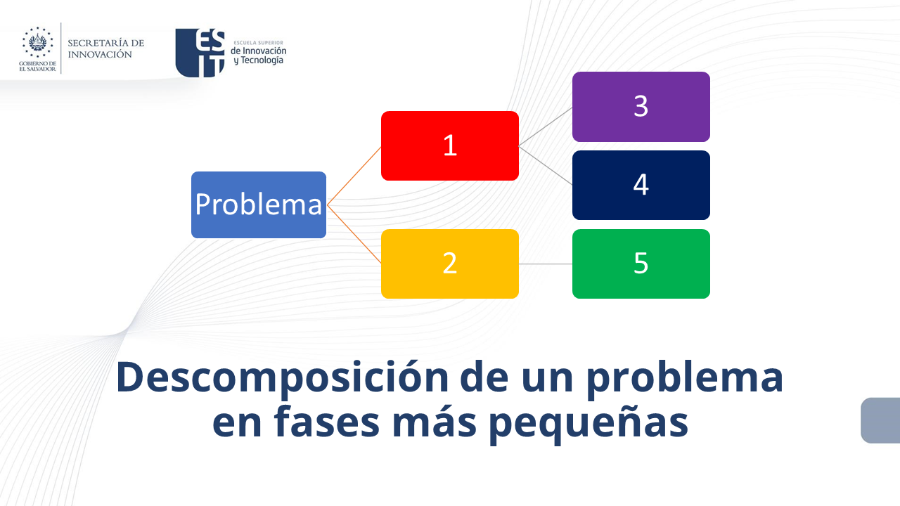
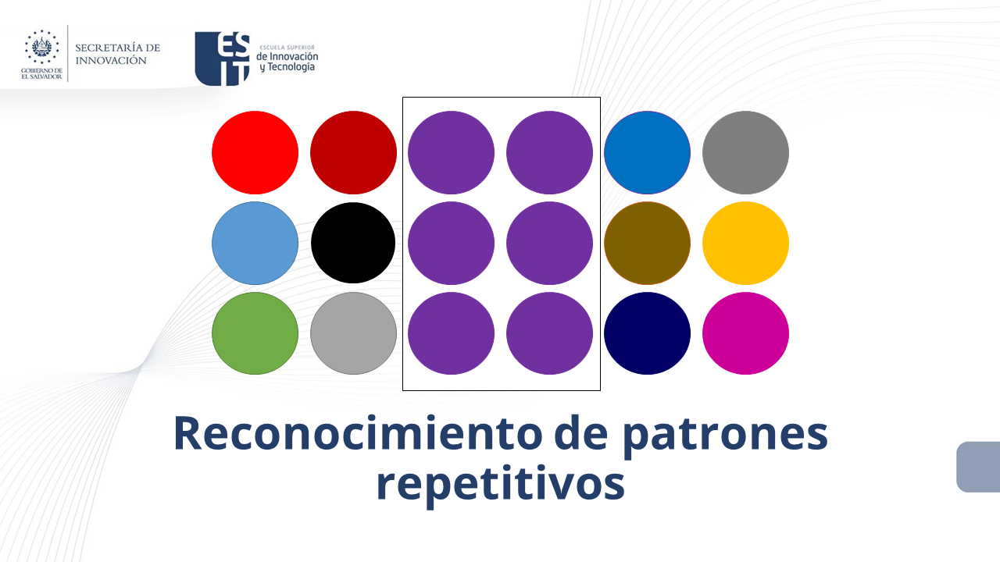
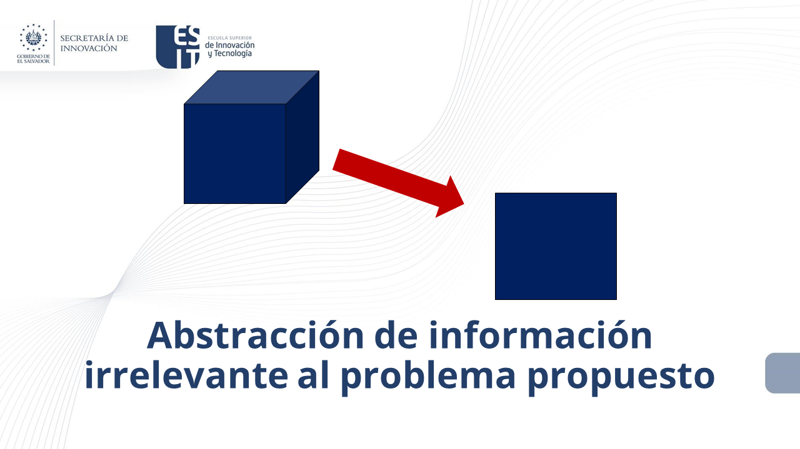
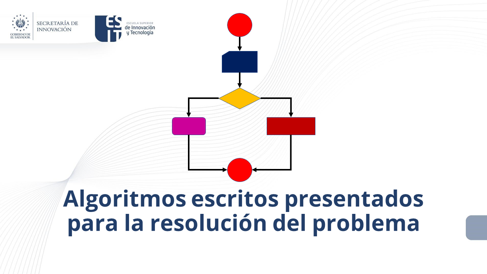

1. Conceptos Fundamentales de Programación
3. Resolución de Problemas
El pensamiento computacional, es el proceso que permite formular o resolver problemas del mundo que nos rodea haciendo uso de habilidades y técnicas, como las secuencias e instrucciones ordenadas (algoritmos), para llegar a la solución.
Descomposición
Consiste en la ruptura de un sistema o problema complejo en partes más pequeñas para que así sean más fáciles de solucionar. Cada pequeño problema se irá resolviendo uno tras otro hasta solucionar el sistema completo.
Patrones
Una vez que hayas descompuesto el problema complejo en varios más pequeños, busca estándares de características comunes. Encontrar estas semejanzas en los pequeños problemas descompuestos te ayudará a resolver el sistema de forma más eficiente.
Abstracción
La abstracción se refiere a centrarse en la información importante, dejando de lado aquellas características irrelevantes e innecesarias. Pero, ¿cuál es información importante? En la abstracción se trata principalmente de las características generales que son comunes a cada en elemento, en lugar de detalles específicos. Luego de contar con estas características generales, se debe proceder a crear un “modelo” del problema, el cual es la idea general del problema que se intenta resolver.
Algoritmo
Luego de dividir el gran problema en varios más pequeños, identificar las similitudes entre estos, centrarte en los detalles pertinentes y dejar atrás cualquier información irrelevante. El Algoritmo representa 3 etapas: Entrada: datos sobre los que el algoritmo opera. Proceso: pasos que hay que seguir. Salida: resultado que entrega el algoritmo.
Obra publicada con Licencia Creative Commons Reconocimiento Compartir igual 4.0